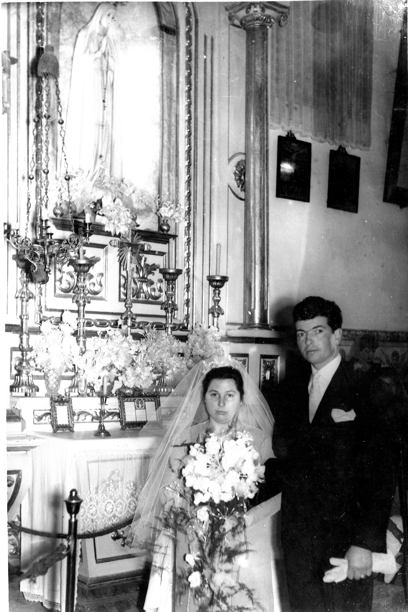

Igreja Santa Marinha Afurada , 1961-01-15
Casamento de António Oliveira Machado com Ana de Lourdes Oliveira Chaminé
António Oliveira Machado e Ana de Lourdes Oliveira Chaminé, em frente ao altar de Nossa Senhora de Fátima, na Igreja de Santa Marinha Afurada, no dia do casamento.